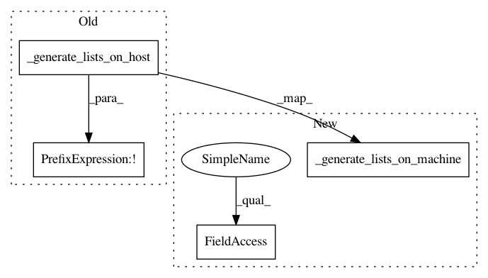

d06f95d3e90083edff53a83fbd0cfd3a55804c1f,spynnaker/pyNN/models/neural_projections/connectors/all_to_all_connector.py,AllToAllConnector,generate_on_machine,#AllToAllConnector#,131
Before Change
def generate_on_machine(self):
return (
not self._generate_lists_on_host(self._weights) and
not self._generate_lists_on_host(self._delays))
def create_synaptic_block(
self, pre_slices, pre_slice_index, post_slices,
After Change
return self._get_weight_variance(self._weights, connection_slices)
def generate_on_machine(self):
return (self._gen_on_spinn and \
self._generate_lists_on_machine(self._weights) and \
self._generate_lists_on_machine(self._delays))
def create_synaptic_block(
self, pre_slices, pre_slice_index, post_slices,
In pattern: SUPERPATTERN
Frequency: 3
Non-data size: 4
Instances
Project Name: SpiNNakerManchester/sPyNNaker
Commit Name: d06f95d3e90083edff53a83fbd0cfd3a55804c1f
Time: 2018-01-12
Author: Andrew.Rowley@manchester.ac.uk
File Name: spynnaker/pyNN/models/neural_projections/connectors/all_to_all_connector.py
Class Name: AllToAllConnector
Method Name: generate_on_machine
Project Name: SpiNNakerManchester/sPyNNaker
Commit Name: d06f95d3e90083edff53a83fbd0cfd3a55804c1f
Time: 2018-01-12
Author: Andrew.Rowley@manchester.ac.uk
File Name: spynnaker/pyNN/models/neural_projections/connectors/one_to_one_connector.py
Class Name: OneToOneConnector
Method Name: generate_on_machine
Project Name: SpiNNakerManchester/sPyNNaker
Commit Name: d06f95d3e90083edff53a83fbd0cfd3a55804c1f
Time: 2018-01-12
Author: Andrew.Rowley@manchester.ac.uk
File Name: spynnaker/pyNN/models/neural_projections/connectors/fixed_probability_connector.py
Class Name: FixedProbabilityConnector
Method Name: generate_on_machine